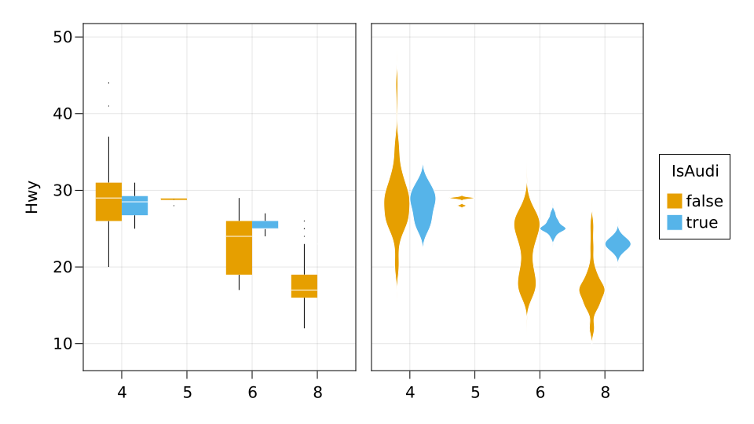
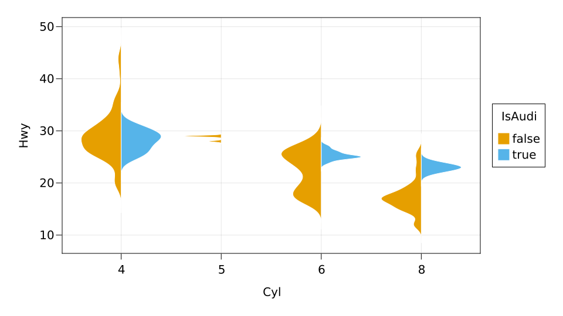

Statistical plots
Statistical plots are supported automatically, provided that they are implemented in Makie. Integration with the styling framework should also happen automatically. Some particular statistical plots have specific keyword options that can be applied in mapping, such as dodge (for boxplot and violin) or side (for violin).
Examples
using RDatasets: dataset
using AlgebraOfGraphics, CairoMakie
mpg = dataset("ggplot2", "mpg");
mpg.IsAudi = mpg.Manufacturer .== "audi"
geom = visual(BoxPlot, layout_x = 1) + visual(Violin, layout_x = 2)
data(mpg) *
mapping(:Cyl => categorical, :Hwy) *
mapping(dodge = :IsAudi => categorical, color = :IsAudi => categorical) *
geom |> draw
data(mpg) *
mapping(:Cyl => categorical, :Hwy) *
mapping(side = :IsAudi => categorical, color = :IsAudi => categorical) *
visual(Violin) |> draw
This page was generated using Literate.jl.